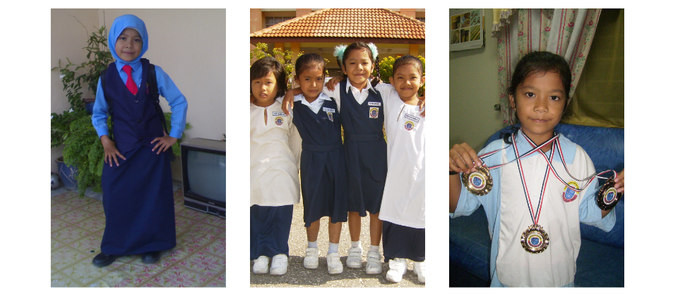
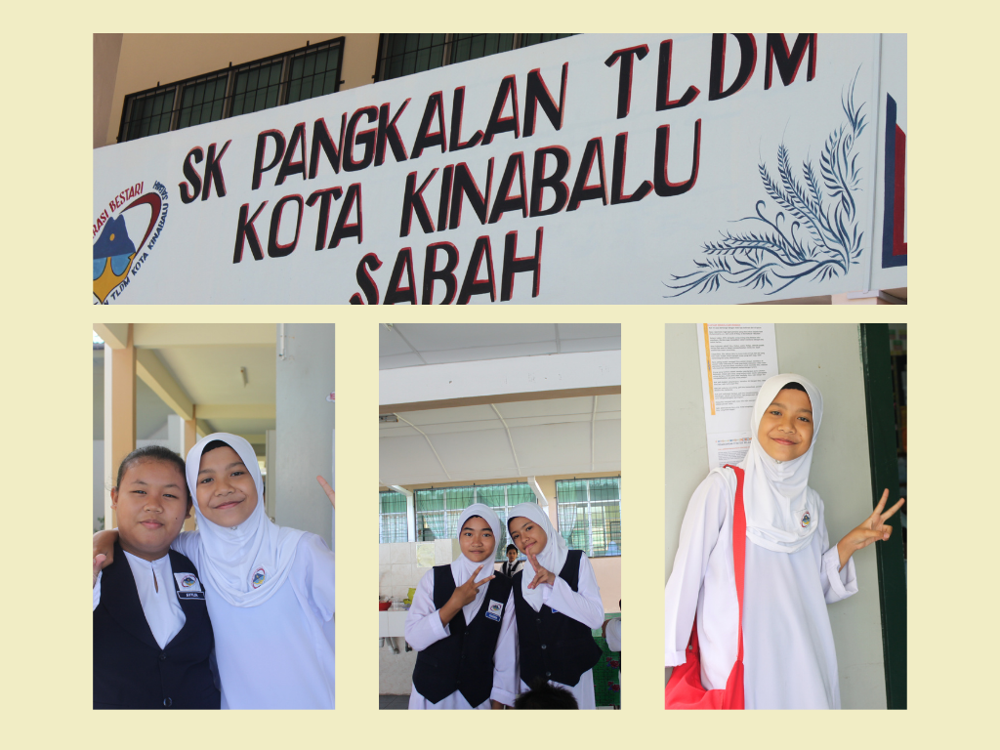
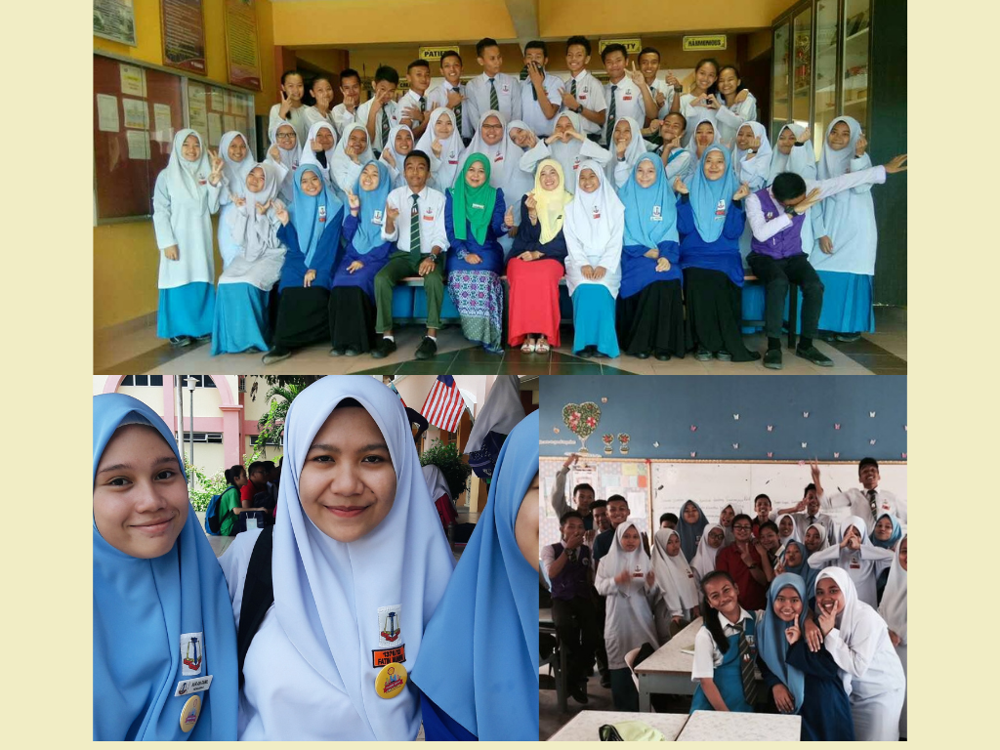
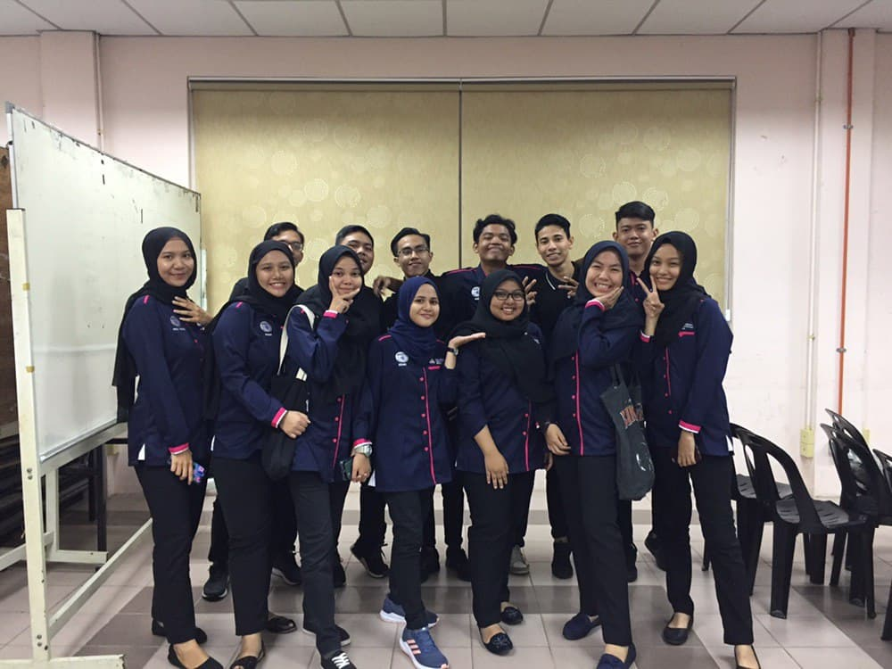

MY EDUCATION
My educational background is just as normal as any other child. At the age of 5 I received my early education at Tadika Idolaku in Manjung Perak. Idolaku Kindergarten is a private kindergarten. My experience of going to school there was very satisfying, the teachers there taught me with full dedication. The atmosphere in the kindergarten was very fun, clean and very comfortable. I really liked the uniforms worn at the time, the leg uniforms were pink and the girls had to wear very cute short skirts. I had so much fun because that time I was able to go to school with my cousin. Btw the school is only located in front of my house, it's easy for me to go to school on foot, my family is not worried because he can see me from the front fence of our house only.
After I was 6 years old, my family and I moved to Klang, Selangor. Then I went to school at Tadika Kemas Baitul Balqis which is close to my residential area in Pulau Indah 2. The first time I went to school there I cried because I was not familiar with the new place and atmosphere. I was also uncomfortable getting to know new friends. My first experience of going to school here was very painful and then I was able to adjust to being with my friends and teachers here. My best accomplishment here is that I always get a place for a coloring contest, and I have also been selected to perform for a traditional dance. At that time I was very active in the field of coloring and also dance, it was the best achievement for me at that time.

Sekolah Kebangsaan Pulau Indah 2, Klang
Then I entered the realm of primary school at Sekolah Kebangsaan Pulau Indah 2, Klang, Selangor. I was very active in education, dance, coloring, and sports at the time. After I advanced to 2nd grade, I was given the opportunity to be a school superintendent. The teacher chose me on the basis of my education and my craft in preparing school work. I am also a focused person when the teacher teaches. Throughout my schooling there I have won various prizes as well as medals in sports and coloring. Every time a coloring contest is held I definitely get first place, just like sports, I will bring only gold, silver and bronze medals. I was very popular then heheehe.

Sekolah Rendah Agama Rakyat, Klang
when i was in primary school, i also went to a folk religion school near my house as well. I will go to school there in the afternoon. I was not very active in religious school because I was often late for school. And I don't like going to religious school because I'm too tired. I am also weak in Arabic, other subjects are just ordinary, I can master it very well. I can read Jawi as early as 6 years old. The teachers there are very good, I once got No. 1 when I went to school there. The chapter on memorizing Quranic verses is easy and I often memorize quickly without any problems.
Sekolah Kebangsaan Pangkalan TLDM, Sepanggar
I only went to school in Pulau Indah from grade 1 to grade 5 only. And then my family and I moved to Kota Kinabalu, Sabah. I was in grade 6 at that time, I went to school at Sekolah Kebangsaan TLDM, Sepanggar. The school is in a remote area in sepanggar bay and it is very private and safe, as the school is in a Navy camp which is guarded by the military before entering the area. Security in the base is very tight, if they do not have an entry permit sticker they will ask for an IC and are not allowed to enter by car, the car must be left outside the camp. Allhamdulillah even though my father has changed careers but he is still called a navy veteran and that allows him to get out of the base to send me to school.
When I went to school there, I had no problem because my good friend from Pulau Indah school had also moved there a year earlier than me. He has helped me a lot in adjusting here. We were both placed in the same class which is class no 2 named Manukan, while the first class was named Mabul. Our class names consist of the names of islands in Sabah. When I went to school there I was also active in sports and became one of the athletes in my school. The teacher saw my talent and took me into an athletic club. My school has various facilities such as football viewing, hockey field, running stadium, swimming pool, badminton court and many more. I am very excited to go to school here because there are various equipments available for children or students at this TLDM school.
There are various sports activities held at our school including yachting. It’s hard to find activities like this in other schools. For yachting activities they have their own equipment and also their own jetty. The jetty was very large and very quiet. For these swimming and yachting activities we have been trained by our own Navy members who are experienced in swimming and operating yachts.In terms of academics, when I went to school here, it was normal. I have managed to get 2A2B1C result for UPSR. It's not very proud but it's okay.
Sekolah Menengah Kebangsaan Tebobon, Menggatal
After I grew up, I went to school at Tebobon National High School located in Menggatal, Sabah. Before that, I went to school in a full boarding school, Sekolah Menengah Kebangsaan Agama Sultan Ahmad Shah in Inanam, Sabah. I only went to school there for 3 months and it was an experience I will never forget. My friend and I need to be fully ready and be at the school surau before the dawn call. Imagine how early we woke up that time and had to take a very cold tap water shower. During the assembly, we will read one page of verses from the Qur'an aloud every day. Our school rules are very strict where we have to wear a long hijab and it is mandatory to wear underwear as well as gloves. I was only able to survive in this school for 3 months only because I couldn’t adjust to this rule, and every day I would cry until someone hated me. In those 3 months, my parents also visited me every night and brought food supplies such as mcd, pizza and even Kfc.
I have opted to go to regular national school only. And Alhamdulillah I was able to adjust there and there was no problem for me to go to school there. In form1 to form 3 I have taken Arabic language classes. Arabic class is the first class and is required to learn Arabic. My achievement at that time was very bad because I had a hard time learning Arabic. But this class is among the smartest classes in this school.
When Im form 4, I have got admission to science technology class where students are required to study chemistry, physics, addmath and accountancy subjects. I was selected into this class because I passed Pt3 in science and math subjects. After a few days I was in that class, then I chose to go to economics class, because I was worried about not being able to take this subject until the end of school. By the end of school I had managed to get satisfactory results and managed to further my studies at a higher level.
UiTM, Kedah
In 2019, I have successfully continued my studies at the diploma level at UiTM Kedah. I have majored in Information Management. I have been in college for 2 semesters only because in semester 3 our country has been infected with corna virus from China, and the university has sent students back to their homes and until now we study online distance learning only.